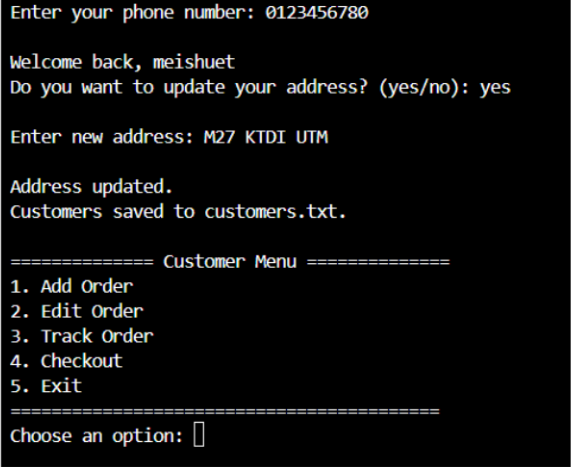
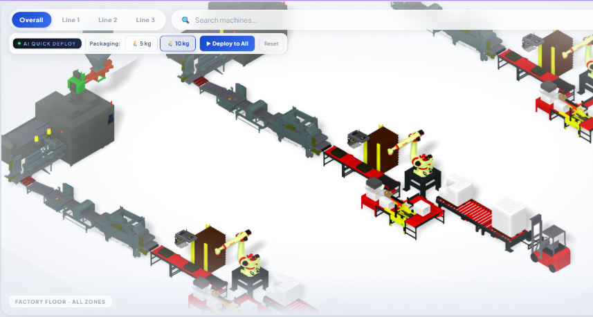
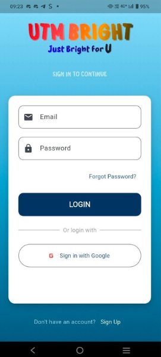

My Project
-
Food Order Management System
Built a Java-based Order Management System for a fast food restaurant with cashier and manager roles, sales reporting, multiple payment/order methods, and persistent file storage, applying core OOP concepts.
Figure 3: Food Order Management System. -
SurpRice
SurpRice is a Factory Intelligence & Predictive Maintenance Platform that transforms how SMEs understand and run their production lines. We fuse real‑time sensor data with a living 3D digital twin, so you don’t just read the factory—you see it, live.
Figure 4: SurpRice Model Picture. -
JustBrightForUTM
JustBrightForUTM is a Smart Campus Mobility & Safety Companion built to empower students with confidence and protection on campus.
Figure 5: Login Page of Just Bright For UTM.